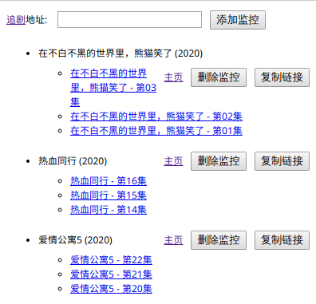
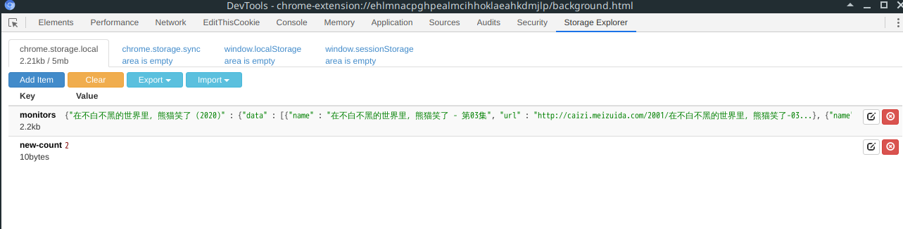
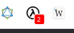

使用ClojureScript进行chrome扩展开发
1 简介
学习使用ClojureScript，使用chromex库，进行chrome扩展开发。chrome只是包装了chrome扩展的api,并把回调模型包装成事件模型，具体参考chromex的指南。
基础的chrome扩展开发知识参考Chrome插件(扩展)开发全攻略，基本概念写的很清楚。一个chrome扩展主要由background、popup、content-script三个独立的部分组成。通过mainfest.json对扩展进行配置。扩展页面之间的通信参考消息通信。
ClojureScript是编译目标为JavaScript的clojure实现。主要学习下和JS的互操作ClojureScript: JavaScript Interop。
示例扩展的目的是实现视频网站的剧集更新监控，发现有新的剧集，则给出提醒，并提供下载地址,popup界面如下：

图1 追剧提醒的popup界面
2 项目配置
添加相应依赖项, ClojureScript编译管理使用figwheel-main代替lein figwheel，popup界面使用reagent实现,dom操作使用dommy库。
(defproject movmon "0.1.0-SNAPSHOT" :dependencies [[org.clojure/clojure "1.10.1"] [org.clojure/clojurescript "1.10.520"] [org.clojure/core.async "0.4.500"] [binaryage/chromex "0.8.4"] [binaryage/devtools "0.9.10"] [prismatic/dommy "1.1.0"] [cljs-ajax "0.8.0"] [binaryage/oops "0.7.0"] [reagent "0.9.0-rc4"] ;;[com.bhauman/figwheel-main "0.2.3"] ;;[com.bhauman/rebel-readline-cljs "0.1.4"] [environ "1.1.0"]] :plugins [[lein-cljsbuild "1.1.7":exclusions [[org.clojure/clojure]]] [lein-shell "0.5.0"] [lein-environ "1.1.0"] [lein-cooper "1.2.2"]] :source-paths ["src/background" "src/popup" "resources"] :clean-targets ^{:protect false} ["target" "resources/unpacked/compiled" "resources/release/compiled"] :profiles {:dev {:dependencies [[cider/piggieback "0.4.2"] [com.bhauman/figwheel-main "0.2.3"] [com.bhauman/rebel-readline-cljs "0.1.4"] ] :repl-options {:nrepl-middleware [cider.piggieback/wrap-cljs-repl]}} :release {:env {:chromex-elide-verbose-logging "true"} :cljsbuild {:builds {:background {:source-paths ["src/background"] :compiler {:output-to "resources/release/compiled/background.js" :output-dir "resources/release/compiled/background" :asset-path "compiled/background" :main movmon.background :optimizations :advanced :elide-asserts true}} :popup {:source-paths ["src/popup"] :compiler {:output-to "resources/release/compiled/popup.js" :output-dir "resources/release/compiled/popup" :asset-path "compiled/popup" :main movmon.popup :optimizations :advanced :elide-asserts true}} }}}} :aliases { "fig-main" ["trampoline" "run" "-m" "figwheel.main" "-bb" "popup" "-b" "background" "-r"] "release" ["with-profile" "+release" "do" ["clean"] ["cljsbuild" "once" "background" "popup"]] })
^{:watch-dirs ["src/background"]} {:output-to "resources/unpacked/compiled/background/main.js" :output-dir "resources/unpacked/compiled/background" :asset-path "compiled/background" :preloads [devtools.preload figwheel.core figwheel.main figwheel.repl.preload] :main movmon.background :optimizations :none :source-map true}
^{:watch-dirs ["src/popup"]} {:output-to "resources/unpacked/compiled/popup/main.js" :output-dir "resources/unpacked/compiled/popup" :asset-path "compiled/popup" :preloads [devtools.preload figwheel.core figwheel.main figwheel.repl.preload] :main movmon.popup :optimizations :none :source-map true}
由于不需要修改打开的网页，因此不需要content-script。
manifest.json扩展配置项如下,主要是权限设置：
/* this manifest is for development only we include all files individually also we allow unsafe eval for figwheel */ { "name": "追剧提醒", "version": "0.1.0", "description": "针对www.8080s.net的追剧提醒", "browser_action": { "default_title": "追剧提醒", "default_popup": "popup.html", "default_icon": { "19": "images/icon19.png", "38": "images/icon38.png" } }, "icons": { "16": "images/icon16.png", "48": "images/icon48.png", "128": "images/icon128.png" }, "background": { "page": "background.html", "persistent": false }, "permissions": [ "nativeMessaging", "notifications", "storage", "http://www.8080s.net/*" ], "manifest_version": 2 }
3 数据存储设计
由于需要定时进行监控剧集更新，只能放到background中运行，popup只有点开扩展图标的时候才能运行，不符合需求。 使用LocalStorage保存相关数据，需要保存每个监控数据的相关信息和更新数量的统计。为了方便查看chrome扩展的本地存储，安装了Storage Area Explorer扩展。

图2 保存监控数据的LocalStorage
monitors保存所有的监控项，以剧集名作为键，保存每一集的名字和下载地址，是否为最近更新，和剧集的url地址。格式如下：
{ "在不白不黑的世界里，熊猫笑了 (2020)": { "data": [ { "name": "在不白不黑的世界里，熊猫笑了 - 第03集", "url": "http://caizi.meizuida.com/2001/在不白不黑的世界里，熊猫笑了-03.mp4" }, { "name": "在不白不黑的世界里，熊猫笑了 - 第02集", "url": "http://ok.renzuida.com/2001/在不白不黑的世界里，熊猫笑了-02.mp4" }, { "name": "在不白不黑的世界里，熊猫笑了 - 第01集", "url": "http://ok.renzuida.com/2001/在不白不黑的世界里，熊猫笑了-01.mp4" } ], "new": false, "url": "http://www.8080s.net/ju/35027" } }
new-count保存最近更新的剧集总数量,用于扩展的badge显示。

图3 扩展的badge显示
数据相关的代码如下：
(ns movmon.background.storage (:require-macros [cljs.core.async.macros :refer [go go-loop]]) (:require [cljs.core.async :refer [<! chan]] [chromex.logging :refer-macros [log info warn error group group-end]] [oops.core :refer [oget oset! ocall oapply ocall! oapply! oget+ oset!+ ocall+ oapply+ ocall!+ oapply!+]] [chromex.protocols.chrome-storage-area :as sa] [chromex.ext.storage :as storage])) (defn get-storage-key [k] (let [local-storage (storage/get-local)] (go (let [[[data] error] (<! (sa/get local-storage k))] (if error (do (error "fetch" k "info error:" error) nil) (-> (js->clj data :keywordize-keys true) (doto #(log "DB: get storage key" %1)) (get (keyword k)))))))) (defn get-all-monitors "获取所有监控项信息" [] (get-storage-key "monitors")) (defn get-new-count "获取更新计数" [] (get-storage-key "new-count")) (defn get-monitor-info "获取监控项信息" [title] (go (-> (<! (get-all-monitors)) title))) (defn set-new-count! "设置更新统计计数" [n] (sa/set (storage/get-local) #js {:new-count n})) (defn update-monitors! [update-fn] (go (let [new-monitors (update-fn (<! (get-all-monitors)))] (log "DB: update monitors!" new-monitors) (sa/set (storage/get-local) (clj->js {:monitors new-monitors}))))) (defn save-monitor-info! "保存监控项" [title url data new] (update-monitors! #(merge % {title {:url url :new new :data data}}))) (defn remove-monitor! "删除一个监控项" [title] (update-monitors! #(dissoc % title))) (defn set-monitor-new-state! "设置监控项的更新状态" [title new] (update-monitors! #(assoc-in % [title :new] new)))
4 后台监控更新
定时访问剧集url的下载数据，并检查是否有更新，并保存新的剧集。
(defn check-update-data! [name info body] (let [html-body (parse-html body) dl-spans (sel html-body "span.dlname.nm") ;; 获取下载框dom元素 last-data (first (:data info)) datas (map parse-dlink dl-spans)] (if (= (:name (first datas)) (:name last-data)) ;; 如果名字与已更新的最后一集名字相同，则没有更新 (log "check update:" name "no new data!") ;; 否则保存新更新的数据， (let [update-datas (take-while #(not= last-data %) datas) new-datas (if (:new info) ;; 之前的数据也是更新数据(没有标记为未更新),则合并数据 (concat update-datas (:data info)) update-datas) update-count (count update-datas)] (log name "check update new datas save:" new-datas "\n") (go (noti-box "剧集更新！" (str name "更新" update-count "集！")) (<! (db/save-monitor-info! name (:url info) new-datas true)) (mark-monitor-new-state! name true update-count)) ))))
(defn proc-monitor [[name info]] (let [url (:url info)] (log "proc monitor :" name "url:" url) (GET url {:handler (partial check-update-data! name info) :error-handler error-handler})))
(defn init! [] (log "BACKGROUND: start ") (js/setInterval proc-monitors (* 5 60 1000)) ; 每5分钟执行1次监控更新 (proc-monitors) (update-badge!) (boot-chrome-event-loop!))
background完整处理代码。
5 popup页面处理
主要是popup页面的显示和background的通信处理。
(defn add-monitor! "添加监控信息" [url] (log "add monitor" url) ;; 直接发送消息给background处理 (post-message! @server #js {:type "add-monitor" :url url}))
注意发送的消息使用js格式，不能使用edn。
页面显示使用reagent实现，参考示例。
(defn curr-monitors-pane [] (let [monitors-data @monitors] (log "curr monitors:" monitors-data "type:" (type monitors-data)) (if (empty? monitors-data) [:div [:a {:href ju-url :target "_blank"} "快去追剧"]] [:div [:ul (map (fn [[title {:keys [data new url]}]] ^{:key title} [:li.mov {:class (if new "mov-new")} [:div.mov-info [:div.mov-title (name title)] [:div.mov-op [:a {:href url :target "_blank"} "主页"] [:input.del {:type "button" :value "删除监控" :on-click (fn [_] (del-monitor! title) (if new (mark-monitor-old! title (count data))))}] [:input.copy {:type "button" :value "复制链接" :on-click (fn [_] (copy-urls data) (if new (mark-monitor-old! title (count data))))}]]] [monitor-video data]]) monitors-data)]])))
popup页面的完整代码。
6 开发与发布过程
开发过程使用emacs+cider插件，选择figwheel-main启动即可，不过chrome扩展包含多个编译项目，需要同时启动多个编译项,如下所示，popup启动为后台构建，background为前台构建，即当前启动的ClojureScript REPL环境为background：
:cljs/quit (require '[figwheel.main.api :as fig]) (fig/stop-all) (fig/start :background :popup)
启动后会按照项目配置自动编译到resources/unpacked/文件夹，在chrome的扩展程序设置中启用开发者模式，加载已解压的扩展程序，指向resources/unpacked/文件夹即可。
如果是release发布，在项目根目录执行lein release,编译优化后的js文件到resources/release/文件夹下即可。可以使用chrome浏览器加载、打包,或发布到chrome web store。
7 总结
学习了chrome扩展开发的方法。ClojureScript和JavaScript之间的互操作。figwheel-main构建管理的方法。